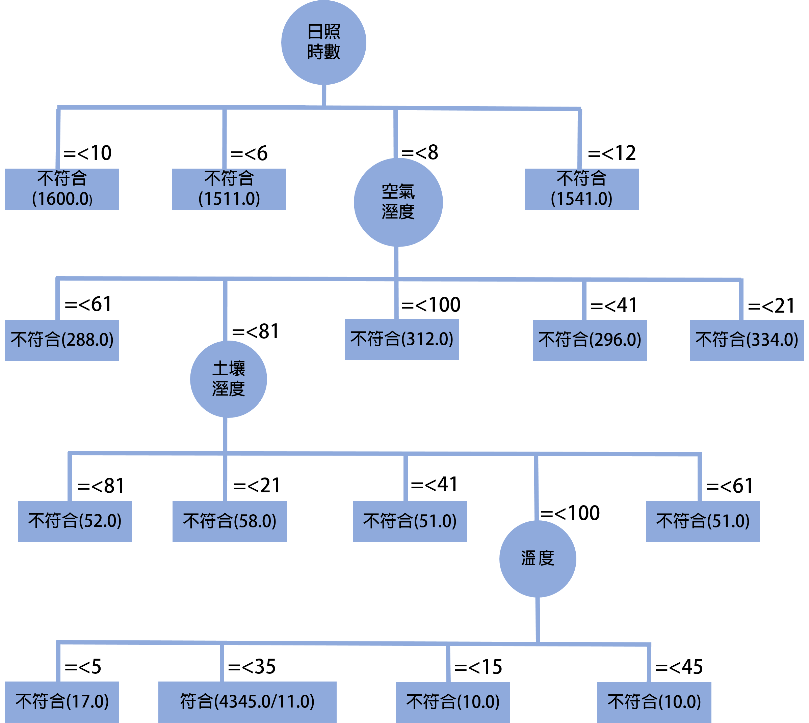

分析報告
水稻最佳生長環境
| 氣溫 | 16~28(級距16~25) |
| 空氣濕度 | 65%(級距61~80) |
| 土壤濕度 | 100%(級距80~100) |
| 日照時數 | 7.3小時(級距6~8) |
本期報告注意事項
本期報告注意事項 近期須注意空氣濕度過高問題，需檢查除濕設備是否異常，土壤濕度要注意是否過低，導致水分不足，作物無法如期成長，至於日照，要注意是否超過8小時，需要關閉部分透光窗戶，氣溫則要注意，是否太高溫，灑水設備是否有損壞。

Time taken to build model: 0.05 seconds
===Evaluation on training set===
Time taken to test model on training data: 0.05 seconds===Summary===
Correctly Classified Instances 99.895 %Incorrectly Classified Instances 11 0.105 %
Kappa statistic 0.9978
Mean absolute error 0.0021
Root mean squared error 0.0324
Relative absolute error 0.4318 %
Root relative squared error 6.5712 %
Total Number of Instances 10476
===Detailed Accuracy By Class===
| TP Rate | FP Rate | Precision | Recall | F-Measure | MCC | ROC Area | PRC Area | Class |
|---|---|---|---|---|---|---|---|---|
| 0.998 | 0.000 | 1.000 | 0.998 | 0.999 | 0.998 | 0.999 | 0.999 | FALSE |
| 1.000 | 0.002 | 0.997 | 1.000 | 0.999 | 0.998 | 0.999 | 0.997 | TURE |
| Weighted Avg. | 0.999 | 0.001 | 0.999 | 0.999 | 0.999 | 0.998 | 0.999 | 0.999 |
===Confusion Matrix===
a b <-- classified as6131 11| a=FALSE
0 4334 | b=TURE
Size of the tree : 19
===Stratified cross-validation===
Time taken to build model: 0.05 seconds===Summary===
Correctly Classified Instances 13728 100 %Incorrectly Classified Instances 0 0 %
Kappa statistic 1
Mean absolute error 0
Root mean squared error 0
Relative absolute error 0
Root relative squared error 0
Total Number of Instances 13728
===Detailed Accuracy By Class===
| TP Rate | FP Rate | Precision | Recall | F-Measure | MCC | ROC Area | PRC Area | Class |
|---|---|---|---|---|---|---|---|---|
| 1.000 | 0.000 | 1.000 | 1.000 | 1.000 | 1.000 | 1.000 | 1.000 | FALSE |
| 1.000 | 0.000 | 1.000 | 1.000 | 1.000 | 1.000 | 1.000 | 1.000 | TURE |
| Weighted Avg. | 0.000 | 1.000 | 1.000 | 1.000 | 1.000 | 1.000 | 1.000 | 1.000 |
===Confusion Matrix===
a b <-- classified as9696 0| a=FALSE
0 4032 | b=TURE